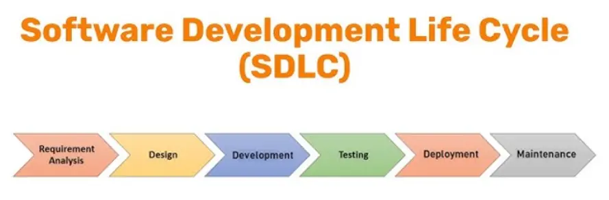
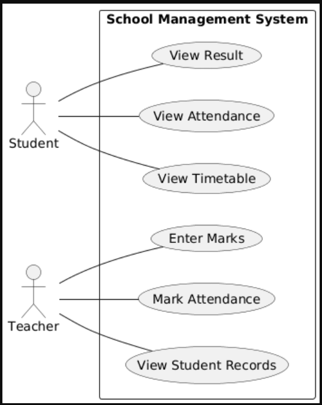
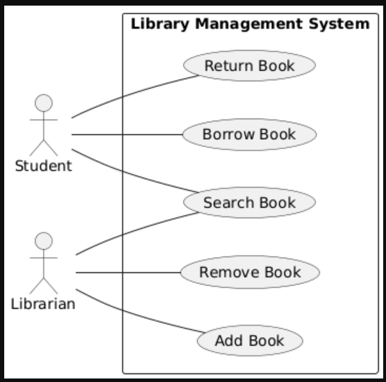
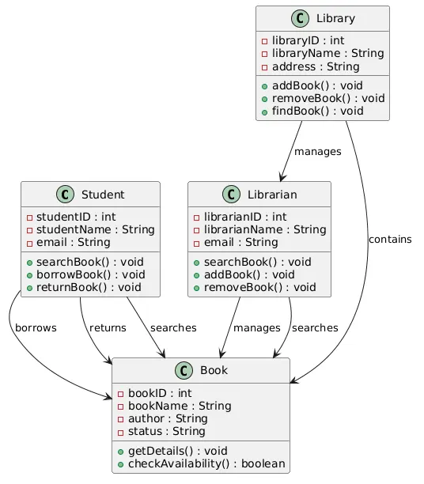
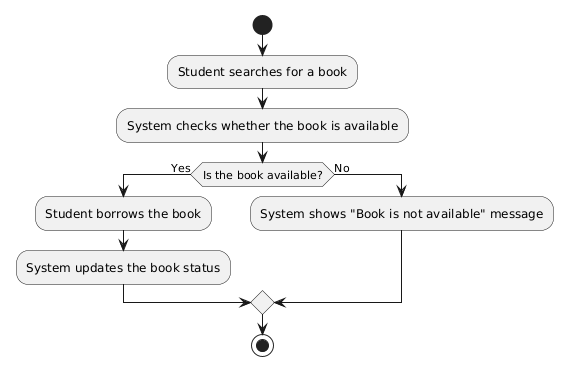

What is Software?
Software is a collection of programs, instructions, and data that tells a computer or other electronic device what to do.
Here are some common examples of software:
- Microsoft Windows – Runs and manages a computer.
- Google Chrome – Lets you browse the internet.
- Microsoft Word – Used to create and edit documents.
- Microsoft Excel – Used for calculations and data analysis.
- Adobe Photoshop – Used to edit photos and create graphics.
- VLC Media Player – Plays videos and music.
- WhatsApp – Used for messaging and voice and video calls.
- Instagram – Used to share photos and videos.
Software Development
Software development is the process of creating computer programs or applications for different tasks. It includes planning, designing, coding, testing, and updating software to make sure it works properly and meets users' needs.
Here are some common examples of software development:
- WhatsApp – Developed for messaging and voice/video calls.
- Microsoft Word – Developed to create and edit documents.
- Google Chrome – Developed to browse the internet.
- Instagram – Developed to share photos, videos, and messages.
- Adobe Photoshop – Developed to edit photos and create graphics.
Software Development Life Cycle (SDLC)
Software Development Life Cycle (SDLC) is a step-by-step process used to create software from start to finish. It helps developers build software in an organized and easy way.
Diagram

Purpose of SDLC
- Produce high-quality software.
- Complete the project on time.
- Stay within the budget.
- Meet the customer's requirements.
Here are some common examples of SDLC:
- Banking App – Planned, developed, tested, and launched using SDLC.
- Online Shopping Website – Built step by step to make sure it works correctly.
- School Management System – Created using SDLC to manage students and teachers.
- Food Delivery App – Developed in different stages before being released to users.
Framework in Software Development
A framework is a ready-made structure that helps developers build software faster. It provides many ready-made tools and features, so developers do not have to create everything from the beginning.
Example:
- Without a framework: If you want to build a house, you have to make every brick, door, and window yourself.
- With a framework: Many parts are already available, so you only need to put them together and finish the house.
Stages of SDLC
1. Requirement Gathering
Requirement Gathering is the first stage of SDLC. In this stage, developers collect information about what users need and what features the software should have.
Activities
-
Interviews and Surveys: Asking questions and collecting feedback from potential users to understand their needs and preferences.
Example: Developers ask teachers and students what features they want in a student portal, such as viewing grades or attendance. -
Observations: Watching how users interact with current systems to identify problems and opportunities for improvement.
Example: Developers watch teachers record attendance manually to understand how the student portal can make the process easier. -
Document Review: Looking at existing documents, such as reports and user manuals, to gather additional information about the requirements.
Example: Developers review attendance records, report cards, and school forms before creating the student portal.
Functional and Non-Functional Requirements
Functional Requirements
Functional requirements describe what the system should do. They explain the features and functions the software must provide.
Example: Library Management System
- User Registration – Students can create and log in to their accounts.
- Book Search – Users can search for books by title, author, or category.
- Book Borrowing – Users can borrow and return books.
- Inventory Management – Librarians can add, update, and remove books.
- Fine Calculation – The system automatically calculates late return fines.
Non-Functional Requirements
Non-functional requirements describe how well the system should work. They focus on the system's quality, speed, security, and reliability.
Example: Library Management System
- Performance – The system should respond quickly and support many users at the same time.
- Reliability – The system should work properly with very little downtime.
- Security – The system should protect user accounts and keep data safe.
- Usability – The system should be simple and easy for students and librarians to use.
- Availability – The system should be available whenever users need it.
2. Design Phase
In the Design Phase, developers plan how the software will work. They design the screens, create the system structure, and decide how different parts of the software will connect.
Activities
-
Create Diagrams – Draw diagrams to show the steps or flow of the system.
Example: School Website Flow: Open Website → Log In → View Dashboard → Check Grades. -
Develop Models – Design what the software screens will look like before coding.
Example: Design the Login page and Student Dashboard of the school website. -
Plan Architecture – Decide how the website, server, and database will work together.
Example: A student logs in to the school website, the website sends the request to the server, and the server gets the student's data from the database. -
Specify Requirements – Write a clear list of all the features the software should have.
Example: The school website should allow students to view grades, attendance, notices, and exam schedules.
Result
- Organized software design
- User-friendly interface
- Easy to build and maintain
3. Coding / Development
In the Coding or Development phase, programmers write the code based on the design created in the previous phase. This is the stage where the software is built.
Activities
-
Write Code – Programmers write code to create the software features.
Example: Write code for user login, registration, and grade viewing in a student portal. -
Use Programming Languages – Developers use programming languages to build the software.
Example: Use Java, Python, or C# to develop the application. -
Follow the Design – Developers write code according to the design and requirements.
Example: Create the login page and dashboard as planned in the Design Phase. -
Fix Coding Errors – Developers find and correct mistakes while writing the code.
Example: Fix an error that prevents users from logging in.
Result
- Working software
- Completed program features
- Software ready for testing
4. Testing
Testing is the process of checking whether the software works correctly. It helps find and fix errors before the software is released to users.
Types of Testing
-
Functionality Testing – Checks whether all features of the software work as expected.
Example: Does the Login button open the user's account after entering the correct username and password? -
Performance Testing – Checks whether the software works quickly and can handle many users at the same time.
Example: Can the school website handle 5,000 students logging in during exam results? -
Compatibility Testing – Checks whether the software works properly on different devices, browsers, and operating systems.
Example: Does the app work correctly on Android phones, iPhones, tablets, and computers?
Result
- Errors are found and fixed.
- Software works correctly.
- Software is ready for deployment.
5. Deployment
Deployment is the process of releasing the software so users can start using it. In this phase, the software is installed, configured, and checked in the real working environment.
Activities
-
Installation – Install the software on the user's computer or server.
Example: Install a school management system on the school's computers. -
Configuration – Set up the software so it works correctly.
Example: Connect the school management system to its database and create user accounts. -
Real-World Testing – Check whether the software works properly in the actual working environment.
Example: Use the school management system in the school to make sure students, teachers, and staff can use it without problems.
Result
- Software is installed.
- Software is ready for users.
- Software works correctly in the real environment.
6. Maintenance
Maintenance is the final stage of SDLC. It takes place after the software is released. In this phase, developers fix problems, improve the software, and add new features when needed.
Activities
-
Fix Bugs – Correct errors found after the software is released.
Example: Fix a login problem that prevents users from signing in. -
Improve Performance – Make the software faster and more efficient.
Example: Reduce the time it takes to open the dashboard. -
Add New Features – Add new functions based on user needs.
Example: Add an online fee payment feature to the school management system.
Result
- Software errors are fixed.
- Software performance is improved.
- New features are added.
Software Development Methodologies
Software Development Methodologies are different approaches used to plan, organize, and manage software development projects. They help development teams complete projects in a structured and efficient way.
Why are Software Development Methodologies Important?
Software development methodologies provide many benefits, such as:
- Better Planning
- Better Teamwork
- Better Quality
Software Process Models
A Software Process Model is a step-by-step framework or roadmap that guides the software development process from the beginning until the software is completed and maintained.
Benefits of Software Process Models
Software Process Models provide many benefits, such as:
- 1
Predictability: The development process becomes more organized because the team knows what to do next at every stage. So, the team manages risks more effectively.
Example: After gathering requirements, the next step is designing the software instead of randomly starting coding. -
Efficiency: A proper process reduces unnecessary work, saves time, and makes better use of available resources.
Example: Finding and fixing design mistakes early is much easier than correcting them after the software is completed. -
Quality: Following a process model ensures that quality is maintained throughout the SDLC.
Example: Every feature is tested before the software is released, resulting in fewer bugs.
Waterfall Model
The Waterfall Model is one of the simplest software development models. It is a linear (step-by-step) process where each phase must be completed before moving to the next phase. Once a phase is finished, it is usually not revisited.
Flow of the Waterfall Model
Requirements → Design → Coding → Testing → Deployment → Maintenance
- Requirements: Gather and analyze customer needs, project goals, and system requirements before development begins.
- Design: Create the software architecture, database, user interface, and overall system design based on the requirements.
- Coding: Developers write the source code and build the software according to the approved design.
- Testing: Test the software to identify and fix errors, ensuring it works correctly and meets all requirements.
- Deployment: Release and install the software in the user's environment so it can be used.
- Maintenance: Fix bugs, resolve issues, and provide support after the software has been deployed.
Example
A company wants to develop a simple payroll system where all requirements are already known and are unlikely to change. Since the project is straightforward, the Waterfall Model is a good choice.
Advantages of the Waterfall Model
- Simple and Easy to Understand: The Waterfall Model follows a step-by-step process, making it easy for developers and managers to understand.
- Easy to Plan and Manage: Each phase has a fixed schedule and deliverables, making project planning and management easier.
- Suitable for Small Projects with Clear Requirements: It works best when the project requirements are fixed and are not expected to change.
- Clear Phases and Documentation: Each phase has a specific goal and proper documentation, making the development process organized.
Disadvantages of the Waterfall Model
- Inflexibility(Difficult to Make Changes): Once a phase is completed, making changes is difficult, time-consuming, and expensive.
- Not Suitable for Large or Complex Projects: It is not a good choice for projects where requirements frequently change or are not fully known.
- Risk and Uncertainty: The model assumes all requirements are known from the start, which can be risky if new requirements arise later.
Agile Methodology
Agile Methodology is a software development approach in which software is built in small parts called sprints or iterations. After each sprint, customers give feedback, and improvements are made before the next sprint.
Example
While developing an online shopping app:
- Sprint 1: Login feature
- Sprint 2: Product search
- Sprint 3: Payment system
After each sprint, users test the feature and provide feedback.
Flow of Agile Methodology
Requirements → Design → Development → Testing → Deployment → Review → Next Sprint
In Agile, these steps are repeated in every sprint until the complete software is finished.
Agile Practices
-
Continuous Integration (CI): Developers combine and test code frequently to find and fix errors early.
Example: Team members merge their code every day to ensure everything works correctly. -
Test-Driven Development (TDD): Developers write tests before writing the actual code.
Example: Before creating a login feature, tests are written to check valid and invalid login attempts. - Pair Programming: Two developers work together on the same code. One writes the code while the other reviews it and suggests improvements.
Advantages of Agile Methodology
- High Flexibility: Changes can be made easily during development if customer requirements change.
- Improved Customer Satisfaction: Customers give feedback after each sprint, helping the team build software that meets their needs.
- Early Bug Detection: Problems are found and fixed early through regular testing.
- Faster Delivery: Working features are completed and delivered in small parts instead of waiting for the whole project.
Disadvantages of Agile Methodology
- Scaling Challenges: Managing large projects with multiple teams can be difficult because it requires effective coordination, communication, and planning.
- Stakeholder Involvement: Agile requires active participation from customers and stakeholders throughout the project. If they do not provide regular feedback, development can be affected.
- Less Predictable: Continuous changes based on feedback make it harder to accurately predict the project's timeline, cost, and final scope.
Project Planning and Management
Project planning is the process of organizing a project before development begins. It helps the team decide:
- What work needs to be done.
- Who will do each task.
- When each task should be completed.
- How much the project will cost.
Example
Planning a wedding before the event by deciding the budget, assigning responsibilities, and creating a schedule.
Setting Project Timelines
A project timeline is a schedule that shows how long each task will take. It helps the team complete the project on time.
Example
| Task | Duration |
|---|---|
| Design | 1 Week |
| Coding | 4 Weeks |
| Testing | 2 Weeks |
Estimating Costs
Cost estimation is the process of calculating the total cost of developing a software project.
Factors Affecting Cost
- Development Team: Experienced developers usually charge higher salaries, so the project cost increases.
-
Technology Stack: Different technologies have different development costs.
Example: A web application built with modern frameworks like React and Node.js may cost more than a simple HTML website. - Project Duration: Projects that take more time usually cost more because developers work for a longer period.
- Risk Management: A small extra budget is kept to handle unexpected problems or changes during the project.
- Quality Assurance: Testing and quality checks increase the project cost, but they help produce high-quality, error-free software.
Risk Assessment and Management
Risk is anything that could cause problems or delays in a software project.
Step 1: Identify Risks
Find possible risks that may affect the project.
Examples:
- A developer leaves the project.
- The technology being used becomes outdated.
Step 2: Analyze Risks
Evaluate each risk by determining:
- Chance of Occurrence: How likely is the risk to happen?
- Impact: How much will it affect the project if it happens?
Step 3: Risk Mitigation
Prepare backup plans to reduce the impact of risks.
Example
Hire or train backup developers so the project can continue if a team member leaves.
Step 4: Monitor Risks
Regularly check for risks throughout the project and take action if new risks appear.
Execution
Execution is the phase where the actual development work takes place according to the project plan.
Activities
- Coding
- Designing
- Building features
Example
Developers write code and build an online shopping system.
Quality Assurance (QA)
Quality Assurance (QA) is the process of ensuring that the software is high quality, reliable, and free from major errors before it is released.
Methods
- Testing: Check whether the software works correctly.
- Code Reviews: Team members review each other's code to find mistakes and improve quality.
- User Feedback: Collect feedback from users to identify issues and make improvements.
Example
Testing every feature of an online shopping system to ensure it works correctly before releasing it to users.
Graphical Representation of a Software System
Introduction to UML Diagrams
UML stands for Unified Modeling Language.
UML is a standard visual language used to represent and design software systems using diagrams. Instead of explaining a software system only through long written descriptions or code, UML allows developers to show the structure, behavior, and interactions of a system graphically.
Why is UML Useful?
UML helps software developers, designers, testers, and customers to have a common visual understanding of the software system.
Types of UML Diagrams
UML provides different types of diagrams to represent different aspects of a software system.
The diagrams are generally divided into two major categories:
1. Structural Diagrams
Structural diagrams show the static structure of a software system.
They describe things such as:
- Classes
- Objects
- Components
- Relationships between different parts of a system
Examples
- Class Diagram
- Object Diagram
- Component Diagram
- Deployment Diagram
2. Behavioral Diagrams
Behavioral diagrams show how a software system behaves and how users or different parts of the system interact with it.
Examples
- Use Case Diagram
- Activity Diagram
- Sequence Diagram
- State Machine Diagram
Use Case Diagram
Definition
A Use Case Diagram is a UML diagram that shows how users or external systems interact with a software system.
It focuses on two main questions:
- Who uses the system?
- What can they do with the system?
Simple Example
Consider an Online Banking System.
A customer may:
- Log in
- Check account balance
- Transfer money
- Withdraw money
- View transaction history
A Use Case Diagram can visually show the Customer and the functions they can perform.
Main Elements of a Use Case Diagram
A Use Case Diagram mainly contains the following elements:
1. Actor
An actor is a person, organization, device, or another system that interacts with the software.
An actor is usually represented by a stick figure.
Example
For an online shopping system:
- Customer
- Administrator
- Payment System
can be actors.
2. Use Case
A use case represents a function or service provided by the system.
It is usually represented by an oval.
Examples
- Login
- Search Product
- Add to Cart
- Place Order
- Make Payment
3. System Boundary
The system boundary is a rectangle that represents the software system.
The use cases are placed inside the rectangle, while actors are usually placed outside it.
4. Relationship
Lines are used to show the interaction or relationship between an actor and a use case.
Example
Customer → Place Order
This means that the customer can use the Place Order function.
Purpose of Use Case Diagrams
Use Case Diagrams are mainly used for the following purposes:
1. Capturing Functional Requirements
A Use Case Diagram helps identify and document the functional requirements of a software system.
Functional requirements describe what the system should do.
Example
For an online shopping system, functional requirements may include:
- Customer can register.
- Customer can log in.
- Customer can search for products.
- Customer can add products to the cart.
- Customer can place an order.
These functions can be represented as use cases.
2. Understanding User Interactions
Use Case Diagrams help us understand how different users interact with the system.
Example
In a School Management System:
Teacher may:
- Enter marks
- View student records
- Generate results
Student may:
- View marks
- View attendance
- Download results
The diagram clearly shows which user can perform which function.
3. Planning and Testing
Use Case Diagrams are also useful during software planning and testing.
Before developing the software, developers can use the diagram to identify the required features.
Later, testers can use the same use cases to create test cases.
Example
Suppose the system has a use case: Login
A tester can create tests such as:
- Test login with correct username and password.
- Test login with an incorrect password.
- Test login with an empty username.
- Test login with an empty password.
Therefore, Use Case Diagrams help ensure that the required functions of the system are properly planned and tested.
Example 1: School Management System

There are two actors:
1. Student
The student can:
- View Result
- View Attendance
- View Timetable
2. Teacher
The teacher can:
- Enter Marks
- Mark Attendance
- View Student Records
Example 2: Library Management System

There are two actors:
1. Student
The student can:
- Search Book
- Borrow Book
- Return Book
2. Librarian
The librarian can:
- Search Book
- Add Book
- Remove Book
Identifying Use Cases
Use cases describe the different functions or tasks that users can perform using a software system.
Before creating a Use Case Diagram, we can follow these four steps:
- Identify Actors
- Define Goals
- Outline Interactions
- Validate Use Cases
Four Steps for Identifying Use Cases
| Step | What We Do | Example |
|---|---|---|
| 1. Identify Actors | Find who interacts with the system. Actors can be users, devices, or other systems that interact with the software. | Student, Librarian |
| 2. Define Goals | Find what each actor wants to achieve by using the system. These goals help us identify the main use cases. | Borrow Book, Add Book |
| 3. Outline Interactions | Determine how actors interact with the system to achieve their goals. Identify the main actions performed by the actor. | Student → Borrow Book → System |
| 4. Validate Use Cases | Check that use cases are correct, clear, and complete. Make sure all important actors and functions have been included. | Make sure all important functions are included. |
Example: Library Management System
Let's identify the use cases of a Library Management System using the four steps.
Step 1: Identify Actors
First, identify the people or systems that interact with the library management system.
- Student
- Librarian
Step 2: Define Goals
Next, identify what each actor wants to achieve.
- Student: Search Book, Borrow Book, Return Book
- Librarian: Add Book, Remove Book, Search Book
Step 3: Outline Interactions
Now determine how each actor interacts with the system.
- Student → Search Book → System
- Student → Borrow Book → System
- Student → Return Book → System
- Librarian → Add Book → System
- Librarian → Remove Book → System
- Librarian → Search Book → System
Step 4: Validate Use Cases
Finally, check whether all important actors and functions have been included.
For example, we should make sure that the system includes important functions such as borrowing, returning, adding, and removing books.
Class Diagram
Introduction
A Class Diagram is a type of UML diagram used to show the structure of a software system.
It represents the different classes in a system and shows their:
- Attributes (data or properties)
- Methods (functions or actions)
- Relationships with other classes
Basic Structure of a Class Diagram
A class is usually represented by a rectangle divided into three sections:
┌──────────────────────┐
│ Book │
├──────────────────────┤
│ - bookID │
│ - bookName │
│ - author │
├──────────────────────┤
│ + issueBook() │
│ + returnBook() │
└──────────────────────┘
1. Class Name
The top section contains the name of the class.
Example:
Book
2. Attributes
The middle section contains the attributes of the class.
Attributes describe the data or properties of an object.
Example:
bookIDbookNameauthor
3. Methods
The bottom section contains the methods.
Methods describe the actions or functions that an object can perform.
Example:
issueBook()returnBook()

Class Diagram – Library Management System
Let's use a Library Management System with 4 classes. This makes it easier to understand how different classes are connected.
1. Student
The Student class represents students who use the library.
Attributes
studentIDstudentNameemail
Methods
searchBook()borrowBook()returnBook()
2. Librarian
The Librarian class represents the person who manages the library.
Attributes
librarianIDlibrarianNameemail
Methods
searchBook()addBook()removeBook()
3. Book
The Book class represents the books available in the library.
Attributes
bookIDbookNameauthorstatus
Methods
getDetails()checkAvailability()
4. Library
The Library class represents the library that contains and manages the books.
Attributes
libraryIDlibraryNameaddress
Methods
addBook()removeBook()findBook()
Sequence Diagram
Introduction
A Sequence Diagram is a type of UML diagram that shows how different actors, objects, or systems interact with each other in a particular sequence.
It focuses on what happens first, what happens next, and what happens after that.
Simple Definition
A Sequence Diagram shows the sequence of interactions between different participants over time.
Simple Example
Let's use the Library Management System.
Suppose a Student wants to borrow a book.
The interaction may happen like this:
- Student searches for a book.
- System checks the book.
- System shows the book's availability.
- Student requests to borrow the book.
- System records the borrowing.
- System confirms the borrowing to the student.
So the sequence is:
Student → Library System → Book → Library System → Student
Main Elements of a Sequence Diagram
1. Actor
An actor is the person or external system that interacts with the system.
Example: Student
2. Object/System
An object represents a part of the software that participates in the interaction.
Example: Library System
3. Lifeline
A lifeline shows the existence of an actor or object during the interaction.
It is usually represented by a vertical dashed line.
4. Message
A message represents an interaction or request sent from one participant to another.
Example: Student → Search Book
5. Sequence
The messages are arranged from top to bottom, showing the order in which events occur.
Example: Borrowing a Book
Student Library System Book
│ │ │
│── Search Book ───────>│ │
│ │── Check Book ─────>│
│ │<── Availability ───│
│<── Show Availability ─│ │
│ │ │
│── Borrow Book ───────>│ │
│ │── Update Status ──>│
│ │<── Updated ────────│
│<── Borrow Confirmed ──│ │
│ │ │
How to Understand the Diagram
The diagram is read from top to bottom.
- First: Student searches for a book.
- Second: Library System checks the book.
- Third: Book provides its availability.
- Fourth: Student requests to borrow the book.
- Fifth: Library System updates the book status.
- Finally: The system confirms that the book has been borrowed.
Activity Diagram
Introduction
An Activity Diagram is a type of UML diagram used to show the flow of activities or steps in a process.
It shows what happens first, what happens next, and where decisions are made during a process.
Simple Definition
An Activity Diagram is a graphical representation of the workflow of a system or process.
Example: Borrowing a Book
Let's use the Library Management System.
Suppose a student wants to borrow a book. The process can be:

- Student searches for a book.
- System checks whether the book is available.
- If the book is available, the student borrows it.
- System updates the book status.
- If the book is not available, the system shows a message.
- The process ends.
Main Elements of an Activity Diagram
1. Initial Node
It shows where the process starts.
It is usually represented by a filled black circle.
Example:
● Start
2. Activity
An activity represents a task or action performed during the process.
Examples:
- Search Book
- Check Availability
- Borrow Book
- Update Book Status
Activities are usually represented by rounded rectangles.
3. Decision
A decision is used when the system needs to choose between different paths based on a condition.
It is usually represented by a diamond shape.
Example
Is Book Available?
- Yes → Borrow Book
- No → Show "Not Available"
4. Arrow
An arrow shows the flow from one activity to the next.
Example:
Search Book → Check Availability
It tells us that Check Availability happens after Search Book.
5. Final Node
It shows where the process ends.
It is usually represented by a circle with another circle around it.
Example:
◉ End
Introduction To Design Patterns
What is a Design Pattern?
A Design Pattern is a general and reusable approach for solving a common problem in software design.
It provides developers with a proven way to organize and design software without giving them a complete program or specific code. Developers can adapt the pattern according to the requirements of their application.
| Pattern | Meaning | Example |
|---|---|---|
| Singleton | Creates only one instance of an object and reuses it. | One shared database connection manager used by different parts of an application. |
| Factory | Creates the required object without exposing its creation details. |
A Vehicle Factory can create different vehicle
objects such as Car, Bike, or
Bus according to the program's requirement.
|
| Observer | Automatically notifies other objects when something changes. | A YouTube channel can notify its subscribers when a new video is uploaded. |
| Strategy | Allows choosing between different algorithms or methods for the same task. |
An e-commerce system selects CreditCard,
PayPal, or BankTransfer payment strategy.
|
Applications of Design Patterns
- Make code easier to understand by giving it a clear structure.
- Reuse code instead of writing the same solution again.
- Make it easier for developers to communicate with each other.
- Help make software strong, reliable, and easy to maintain.
Software Debugging and Testing
1. Debugging
Debugging is the process of finding and fixing errors (bugs) in a program.
Tools and Best Practices
1. Debuggers
A debugger is a tool that helps programmers find errors by running a program step by step and checking the values of variables.
Example:
A programmer can pause a Python program at a specific line and check why a variable has the wrong value.
2. Print Statement
A print statement displays values or messages while the program is running. It helps programmers understand what is happening inside the program.
Example:
age = 15
print(age)3. Code Review
Code review means checking another programmer's code to find errors and improve its quality.
Example:
A developer reviews a colleague's code and finds that a condition is incorrect.
2. Testing
Software testing is the process of checking software to find errors and make sure it works as expected.
Types of Testing
1. Unit Testing
Tests individual parts or units of a program separately.
Example:
Testing a Python function that calculates the total price.
2. Integration Testing
Tests whether different parts of a program work correctly together.
Example:
Checking whether the login system correctly works with the database.
3. System Testing
Tests the complete software system to make sure all parts work together correctly.
Example:
Testing an entire online shopping website, including login, product search, cart, and payment.
4. Acceptance Testing
Checks whether the software meets the user's or customer's requirements.
Example:
A school checks whether a newly developed student-management software meets all the requirements they requested.
Debugging focuses on finding and fixing bugs, while testing focuses on checking whether the software works correctly and meets its requirements.
Software Development Tools
Software development tools are programs that help developers write, translate, test, debug, and manage software.
1. Language Editors
Language editors are tools used to write and edit source code.
- Notepad++ – A lightweight text and code editor.
- VS Code – A powerful code editor that supports many programming languages and provides features such as extensions, debugging, and code completion.
2. Translators
Translators are software tools that convert source code written in a programming language into machine code or instructions that the computer can understand and execute. Common types of translators include Assemblers, Compilers and Interpreters.
Compiler
A compiler translates the whole program into machine code before execution.
Example: C and C++ commonly use compilers.
Interpreter
An interpreter translates and executes the program line by line.
Example: Python commonly uses an interpreter.
3. Debuggers
A debugger is a tool used to find and fix errors (bugs) in a program.
Example: A debugger can pause a program at a specific line and allow the programmer to check variable values.
4. IDEs
IDE (Integrated Development Environment) is a software application that provides several development tools in one place, such as a code editor, debugger, and compiler/interpreter support.
Examples: Visual Studio, PyCharm, and Eclipse.
Online and Offline Computing Platforms
-
Online platforms – Allow developers to write and run code
through the internet without installing the complete development
environment.
- Example: Google Colab
-
Offline platforms – Software installed on a computer that
can be used without an internet connection for most development tasks.
- Example: PyCharm
5. Source Code Repositories
A source code repository is a place where developers store, manage, and track changes to source code.
GitHub
GitHub is an online platform used to store and manage software projects and their source code. It also supports collaboration between developers.
Bitbucket
Bitbucket is an online platform used to host and manage source code repositories, particularly for projects using Git.
Multiple Choice Questions (MCQs) on Python Programming
Test Yourself: Interactive MCQs (Introduction To Software Development)
Multiple Choice Questions (MCQs) on Software Development
FAQs
Software Development FAQs
Software is a set of programs and instructions that tells a computer what to do.
Software development is the process of designing, creating, testing, deploying, and maintaining software.
SDLC stands for Software Development Life Cycle. It is a structured process used to develop and maintain software.
The main stages are Requirement Gathering, Design, Coding, Testing, Deployment, and Maintenance.
Requirement Gathering is the process of identifying and collecting the needs and expectations of users and the system.
Functional requirements describe what a system should do, while non-functional requirements describe how well the system should perform.
The Waterfall Model is a software development model in which development progresses through a fixed sequence of stages.
Agile is a flexible software development methodology in which software is developed through short iterations or sprints.
Risk assessment and management involves identifying, analyzing, mitigating, and monitoring possible risks in a software project.
Quality Assurance is the process of ensuring that software meets the required quality standards through activities such as testing and code reviews.
UML stands for Unified Modeling Language. It is used to visually model and represent the structure and behavior of software systems.
A Use Case Diagram shows the interactions between users or external systems and a software system.
A Class Diagram represents the structure of a software system by showing classes, their attributes, methods, and relationships.
A Sequence Diagram shows how objects or systems interact with each other in a particular sequence over time.
Debugging is the process of finding and fixing errors or bugs in software.